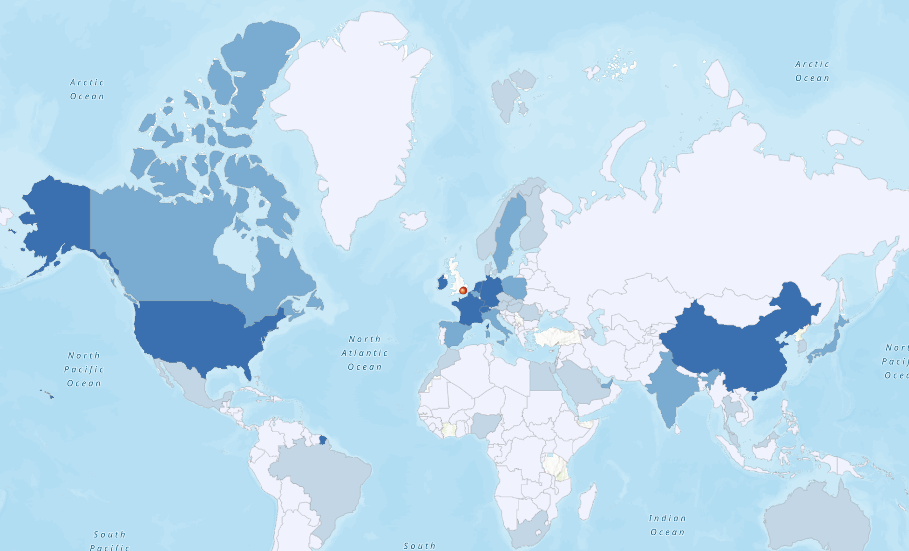

Week 07 · October 2026
Mapping UK Exports, 2024
The question
Where did the United Kingdom export its products and services in 2024, and what can a destination-level map tell us about the geography of trade? I wanted to compare export values across countries and connect this global pattern to physical locations within the UK. However, a map of export destinations does not necessarily show where exports are produced or which specific places support them.
The data
I used the Atlas of Economic Complexity's UK export data for 2024 and Natural Earth's Admin 0 – Countries boundary dataset at 1:110m scale. The CSV contains destination names, gross export values, and export shares. I joined the destination data to country polygons by matching the CSV's Name field with Natural Earth's ADMIN field. I also prepared a point layer showing the City of London, Canary Wharf, and Heathrow Airport as illustrative locations associated with the UK's services and international connectivity.
The method
I created a joined view in ArcGIS Online and styled Gross_Export using Counts and Amounts (Color) to make a choropleth map. I then added the three illustrative locations as a point layer. To check the join, I examined the boundary records without a matched export value and separately compared the CSV destination names against the boundary names. The two checks helped identify potential omissions caused by differences between the datasets.
Open the interactive map: UK Export Destinations, 2024
The evidence

What I found
The join revealed two different types of mismatch. In the joined boundary table, 13 boundary records had no matched export value. In the opposite direction, 59 CSV records did not have an exact name match in the boundary dataset. These figures come from different directions of checking and should not be added together. They also do not mean that all these places had no trade: differences in country naming conventions can prevent an exact match.
London has a highly developed services economy, but the export map suggests that UK exports are concentrated in nearby destinations, particularly in Europe, while China also appears as an important destination. This pattern may reflect the UK's strong economic ties with European markets and its connections with major global trading partners. It could also be influenced by policy and institutional factors, including visa requirements, customs procedures, and other barriers to cross-border exchange. However, some of the apparent concentration may result from missing data or unmatched country names. The map reveals the geographical pattern of reported exports, but further research would be needed to determine how much is explained by economic relationships, policy differences, or data limitations.
What this does not show
The map depends on the quality of the source data and the name-based join. Country names may differ between datasets, so exact-name matching can leave records unmatched even when the corresponding geographic entity exists. Matching by a standardized country code could help reduce this limitation.
The choropleth represents destination-level export values; it does not show trade routes, the location of exporting firms, or the contribution of individual cities and facilities. The three points are illustrative locations rather than evidence that those places directly generated particular exports. The CSV also does not itself clearly specify the currency unit, so this should be verified against the source metadata before interpreting the values as USD.